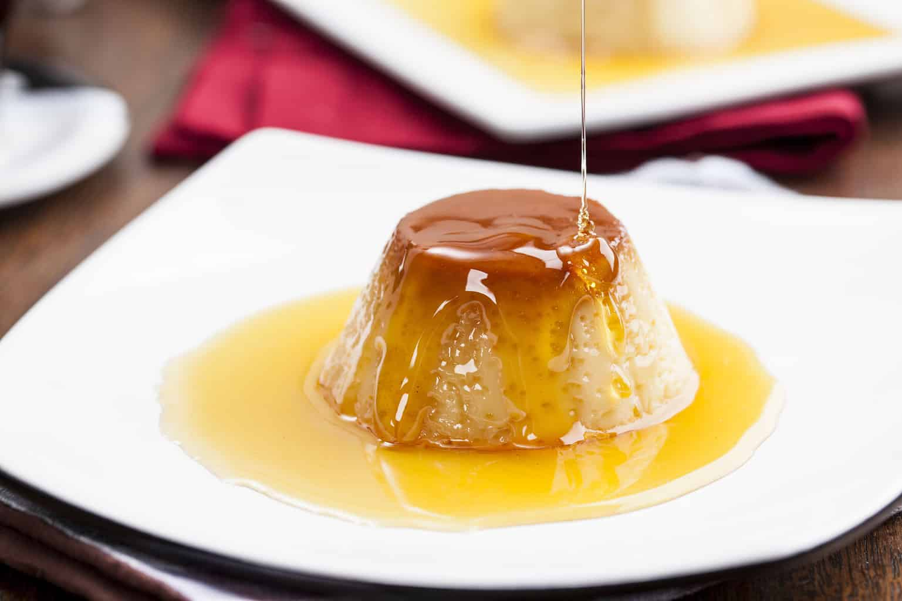

Pudim de Caneca


Tempo de Preparo: 5 minutos
Destaque do Site
O pudim de caneca é uma deliciosa sobremesa individual que pode ser preparada rapidamente no micro-ondas. É uma versão simplificada do pudim tradicional, mas com todo o sabor e textura aveludada que se espera de um bom pudim.